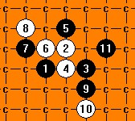

[互动棋谱]恒星超级垃圾谱
首页
茗弈阁
#1 [互动棋谱]恒星超级垃圾谱 作者：二十七刀 发表时间：2009-4-1 17:50:38
 恒星超级垃圾谱.rar[/dl] 好东西快加金币
恒星超级垃圾谱.rar[/dl] 好东西快加金币［ 潇洒 于 2009-4-1 18:32:04 时奖励此帖[金币加 20 威望加1］
［此帖子已被 茗弈小刀 在 2009-4-22 19:22:12 编辑过］
#2 Re:恒星超级垃圾谱 作者：越狱行辕 发表时间：2009-4-1 23:12:08
这个通 峡月吧？
#3 Re:恒星超级垃圾谱 作者：茗弈真实的谎言 发表时间：2009-4-2 10:07:20
很多局面都是互通的。
#4 Re:[互动棋谱]恒星超级垃圾谱 作者：岳麓小棋后 发表时间：2009-5-15 17:38:02
=======上图对应的爱五子棋谱代码如下，以便你拆解：========
h8i9j8i8i10h9g9g10j7j6k9i6i7h6k6l10
======================================================
稍微看了下，这个谱漏点了，这个怎么胜？？
#5 Re:[互动棋谱]恒星超级垃圾谱 作者：方圆之外 发表时间：2009-5-19 16:00:37
=======上图对应的爱五子棋谱代码如下，以便你拆解：========
h8i9j8i8i10h9g9g10j7j6k9i6i7h6l10m11k6
======================================================第一感觉。这个15冲起来。
也不算什么漏点点标错了
15那个a是17的。
［ 茗弈小刀 于 2009-5-19 16:20:06 时花20金币送鲜花一朵］